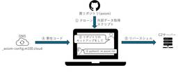

直近1週間の人気フィード
はてなブックマーク数を元に新着優先で並べ替え

はてなエンジニアの自作RSSリーダーをご紹介します 2026 223
223 Hatena Developer Blog
Hatena Developer Blog
はてなには多くのエンジニアが在籍していますが、普段から開発が好きな人が多く、業務以外でも各自が欲しいものなどを自作していることがあります。特に近年では生成AIによって自作のハードルはかなり下がったと思われます。そんな自作ツールたちですが、今回はRSSリーダーに絞って紹介していきます。 自作RSSリーダー紹介 id:yset0 職種: ウェブアプリケーションエンジニア フィード解析 github.c
1日前

ログの種別を整理して、何をどこまで残すか決めた話 30 DRESS CODE TECH BLOGのフィード
DRESS CODE TECH BLOGのフィード
こんにちは。Dress Code株式会社でプロダクトエンジニアをしているぽこひで（@pokohide）です。今日（11/19）は、グラセフの発売日なので有給をとっている方も多いかもしれませんね。空き時間にでも読んでもらえると嬉しいです。Dress Code株式会社は、2024年9月に設立された、人・採用・総務・IT などの領域を統合管理するワークフォースマネジメントプラットフォーム「DRESS C
3日前

PR が1年で5倍になった monorepo で、フロントエンドの基盤をつくる — バクラク Frontend Enabling を募集しています 28 LayerX エンジニアブログ
LayerX エンジニアブログ
はじめに バクラク事業部のエンジニアの ypresto です。 今日はバクラクで募集している Frontend Enabling というポジションについて紹介させてください！ バクラクでは原則としてJavaScriptとGoのソースコードをmonorepoで管理しています。JavaScript のパッケージも今120を超えています！ リポジトリ全体でマージされた PR は、1年前の月 1000 件
2日前

アプリケーションエンジニアの考えるセキュリティ対策（考え方と共通の前提） 43 フューチャー技術ブログ
フューチャー技術ブログ
アプリケーションエンジニアやアーキテクトがセキュリティのために何を考え、どこに手を打つべきかを、実務の目線から整理する初回です。プロトコルとプロダクトを知って組み合わせを見極めるという考え方と、どの層にも共通する2つの前提（言語・フレームワーク・部品を最新に保つこと、セキュアプログラミングの型を外さないこと）をまとめます。
3日前

なぜヘンリーのE2Eリポジトリは整理されないまま膨らみ続けたのか。 AIで加速した開発とガードレール 40 株式会社ヘンリー エンジニアブログ
株式会社ヘンリー エンジニアブログ
AI活用によってさまざまな職種のメンバーが多くのPRを出せるようになった一方で、リポジトリ全体を継続的に整理する仕組みは十分に整っていませんでした。今回はヘンリーのE2Eリポジトリで生じた課題と対応について紹介します。
4日前

tsrs を導入したら oxlint の type-aware linting と typecheck が爆速になった話 30DRESS CODE TECH BLOGのフィード
はじめにこんにちは。ぷーじ（@yug1224）です。以前の記事で、フロントエンドとバックエンドに oxlint、oxfmt、tsgo を入れた話を書きました。https://zenn.dev/dress_code/articles/d655cd7a43b936その後も type-aware linting と typecheck は CI の中で重いステップのままで、キャッシュが外れるとバックエン
3日前

AIを活用したPerlのGo移植（テスト編） 54 Mirrativ Tech Blog
Mirrativ Tech Blog
こんにちは、バックエンド基盤チームの藤井脩紀です。 バックエンド基盤チームは、バックエンドエンジニアの生産性向上やコスト削減を目的に、エンジニア主導で課題を発見・解決している部署です。 ミラティブのバックエンドはPerlからGoへの移植を進めています。その一環として、Perlで書かれたE2Eテスト250ファイルを約9.5週間でGoに移植し、PerlのE2Eテストをゼロにしました。 移植作業の大部分
5日前

リモートコーディングエージェント yoro で始めるループエンジニアリング 18 LayerXのフィード
みなさん、おはようございます、こんにちは、こんばんは Ai Workforce 事業部 プロダクト部 Platform Enablement グループ 吉井 亮です。テクニカルプロジェクトマネージャーというロールで日々プロダクトの価値向上に邁進しています。当記事では Ai Workforce 事業部のリモートコーディングエージェント環境である yoro を使ったループエンジニアリングを紹介します。
4日前

内製 Background Agent “haro”に アラート対応を任せたら 回すたびに賢くなっていった 37 LayerX エンジニアブログ
LayerXに新卒入社したエンジニアが社内の Background Coding Agent「haro」を用いてアラート対応を行った話
4日前
Agent Optimizerを使ってHosted Agentを最適化する 15 Taste of Tech Topics
Taste of Tech Topics
1. はじめに こんにちは、2年目エンジニアの飯棲です。 最近は自宅で電子サックスを吹くことにハマっています。 前回の記事では Microsoft Foundry の Hosted Agent を使って、エージェントをデプロイしました。 acro-engineer.hatenablog.com 今回は Hosted Agent を改善するための機能である Agent Optimizer を試してみ
4日前

AIエージェントを騙す：一見安全だが危険なGitHubリポジトリをAIエージェントにセットアップさせてみた（インターンシップ体験記） 4 NTT docomo Business Engineers' Blog
NTT docomo Business Engineers' Blog
こんにちは、NTTドコモグループの現場受け入れ型インターンシップに参加した、中里と下坂です。 本記事では、私たちが参加した、「攻撃者視点に立ち攻撃技術を研究開発するセキュリティエンジニア」ポストでの取り組みについて紹介します。 NTTドコモグループのセキュリティ業務や、Offensive Securityに興味を持っている方へのご参考になれば幸いです。 なお本記事は、将来の脅威を理解し、防御策の検
1日前
mise + gh skill で、dotfiles から Agent Skills を管理する 29DRESS CODE TECH BLOGのフィード
はじめにこんにちは。ぷーじ（@yug1224）です。Mac の開発環境は dotfiles で管理していて、Homebrew のパッケージ、言語や CLI のツール、設定ファイルの symlink まで mise で入れています。新しい Mac でも make install を 1 回実行すれば、ほぼ元の環境に戻ります（2 回目以降の入れ直しは make mise）。その dotfiles の中
5日前

内製 Coding Agent "haro" と社内 GPU で、探索的テスト AI Agent をぶん回している 39 LayerX エンジニアブログ
探索的テストを、社内の Background Coding Agent「haro」と、社内 GPU で動かしている Qwen3.8-27B にまかせています。今回はその仕組みと、約 10 時間で 47 本のシナリオを回して分かったこと、そして「全部 Claude で回したらいくらかかるのか」をお話しします。
6日前

Kaigi on Rails 2026 のアンドパッドブースのアンケート結果まとめ 3 ANDPAD Tech Blog
ANDPAD Tech Blog
こんにちは、Ruby コミッタの柴田です。9月の想像以上の長雨と天候不順で秋バラが全然咲きませんでした。とほほ。 さて、2026年10月16日から17日にかけて渋谷のベルサール渋谷ガーデンで開催された Kaigi on Rails 2026 に参加しました。アンドパッドはスポンサーとしてのフローズンドリンクの配布やブースでの企画を通したノベルティプレゼントやアンドパッドの社員との会話の時間を提供さ
2日前

内製 Background Agent "haro" を "haro" の中で開発しターミナルを捨てる 3 LayerX エンジニアブログ
LayerX では haro という Background Coding Agent を内製しています。僕はこの haro の開発に関わっていて、「haro 自身の開発を haro の中でできるようにする」ことに取り組んできました。チームではこれを haro in haro と呼んでいます。 最初に試した構成は捨てることになり、今は vCluster と Envoy と Telepresence
2日前
AIで越境する、モバイルエンジニアからフルスタックへの挑戦 27
RAKUS Developers Blog | ラクス エンジニアブログ
はじめに 楽楽精算でモバイルアプリ開発を担当している高橋です。 入社してから最初の1年は、iOSアプリのネイティブ実装（Swift）を担当していました。 ところがここ半年は、Webフロントエンド、さらにサーバーサイドの開発へと、担当する領域を大きく広げています。 昨今のAIの進化もあり、1つのプラットフォームにこだわらず担当領域を広げていきたいと考えていたので、自分にとっても良い流れだと感じていま
5日前
物理世界とAIをつなぐ：可視化で学ぶカメラ・座標系・運動制御入門 15Tech Blog - Turingのフィード
1. はじめにAIが「いま何を考えているのか」を、人間はどうやって知ればいいのでしょうか？我々チューリング株式会社は、カメラ映像から走行軌跡を直接予測するEnd-to-End（E2E）自動運転AIを開発しています。社内では、予測軌跡をカメラ映像に重ねる可視化が、実車試験の振り返りからデモ映像まで、あらゆる場面で使われています。https://x.com/DaisukeMAN/status/2109
5日前

agent-framework ソフトウェアサプライチェーン攻撃の概要と対策指針 3 GMO Flatt Security Blog
GMO Flatt Security Blog
2026年11月18日、Microsoft公式Pythonフレームワークである agent-framework のPyPI パッケージ 1.26.1、1.26.2 に、悪性コードが注入されました。 注入された悪性コードは Infostealer 型マルウェアです。 このマルウェアはPython インタプリタ起動時に自動実行され、環境変数・認証情報ファイル・他プロセスの環境変数・OIDC/マネージド
3日前


転ばぬ先の杖としての差分テスト ― 本番相当データで新旧バッチを突き合わせた話 4 Oisix Creator's Blog（オイシックスクリエイターズブログ）
1. はじめに こんにちは。Oisixプロダクト開発部の栗崎です。 以前の記事では、第三世代アーキテクチャのアプリケーションを Spring Boot 4 にアップデートした話を紹介しました。移行前後に同じテストを当てて「結果が変わらないこと」を確かめる、という進め方はそのときに書いたとおりです。 今回はその続きで、対象は第二世代アーキテクチャのアプリケーションです。第二世代では、コアな機能の 1
4日前

Datadog認定5冠を達成しました 3 フューチャー技術ブログ
Datadog Database Monitoring Fundamentalsに合格し、Datadog認定の5冠を達成しました。最初のFundamentalsから約1か月半、業務で使っていたDatadogを試験の範囲に沿って学び直した合格記です。
5日前
WPPConnect ソフトウェアサプライチェーン攻撃の概要と対策指針 3 GMO Flatt Security Blog
2026年11月16日、WhatsApp Web を Node.js から操作する SDKである @wppconnect-team/wppconnect のnpm パッケージ 2.4.1に、悪性コードが注入されました。 注入された悪性コードは Infostealer 型マルウェアです。 require()や import された際(Dockerイメージではサーバー起動時)に、開発者や運用者の環境変
5日前